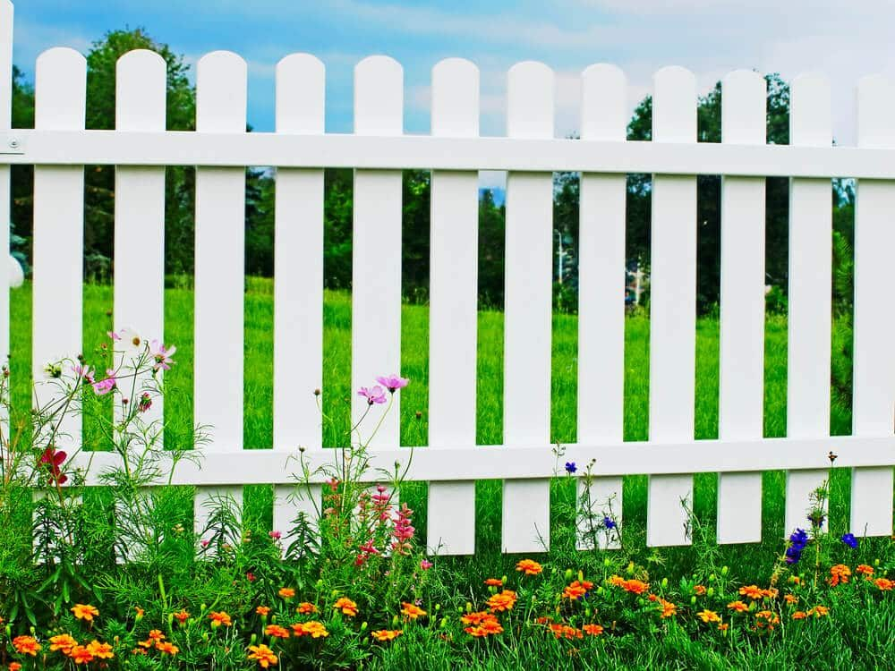

In This Guide
- Vinyl comes in far more than white, including clay, tan, gray, woodgrain, black, and two-tone combinations.
- The best color usually echoes your house, suits your landscaping, and fits how much cleaning you are willing to do.
- Light colors show dirt and mildew faster in humid weather, while dark colors can show fading and run hotter in the sun.
- Check homeowners association rules and look at a sample panel outdoors before you place an order.
Once you have settled on vinyl, one big decision is left: the color. Picking should be fun, and for a lot of homeowners it turns into a stalemate, especially when there are a dozen shades to compare and a fence that will stand in plain view for years.
This guide from Big Easy Fence takes the stress out of it. It covers what colors are available, which ones are most popular, and the four questions that point you toward the right choice for a vinyl fence as part of any residential fencing project.
Yes, Vinyl Fencing Comes in Many Colors
People often assume vinyl means white, and white is certainly the classic. Vinyl is made in many colors beyond it, so you can match or complement the exterior of your house.
Styles vary as much as colors. You can find privacy panels, picket designs, and wood-look vinyl that copies the appearance of natural wood without the sealing and staining that real wood needs. Color and style work together, so it helps to think about both at the same time.
The Most Popular Vinyl Fence Colors
Contractors tend to steer homeowners toward a handful of colors, and there is a reason for it. These shades suit most houses and landscapes.
White
The classic. White vinyl looks clean, suits almost any home, and never really goes out of style. It is a safe choice if you want good curb appeal without making a big statement. The downside is that dirt, and in humid weather mildew, shows on white more easily than on other colors.

Clay
Clay is a soft neutral that is also sold as adobe or khaki. It flatters most house colors and landscapes and looks a little warmer than white.
Tan
Tan or beige is another top pick. It works well with tan siding and also looks good beside gray siding, so it is easy to fit into an existing color scheme.
Gray
Gray gives a cooler, more modern look. It pairs nicely with white trim and with many exterior color schemes.
Woodgrain
Woodgrain vinyl copies the color and texture of real wood, so it suits homeowners who want a natural look. Its earthy tone blends with most landscapes and hides everyday dirt well.

Black
Black is less common than white but a strong choice for a bold, tidy look. It hides dirt and stains, which appeals to owners who do not want to clean often. In strong sun, ask how the finish holds up, since dark colors run hotter and can show fading over time.
Two-Tone Combinations
Two-tone fences are growing in popularity because they add depth and personality. Common pairings include gray with white, black with white, and woodgrain with black.
Four Questions That Point to the Right Color
Once you know the options, these four questions narrow the list quickly.
What Does Your House Look Like?
Treat the fence as an extension of the house, so the two look like they belong together. Some owners match the fence to the house color exactly, and a beige house calls for tan. Others prefer a neutral like white, which fits most homes and landscapes. If your yard is green and leafy, woodgrain vinyl blends into it naturally, and a crisp black works with a sleek, modern exterior. Our guide to house and fence color combinations has more pairing ideas.
How Much Cleaning Will You Do?
This is the question owners overlook. Light, bright colors show dirt, mud, and stains the most, and in a damp climate they show mildew and green algae streaks. Dark colors and woodgrain hide everyday grime better. If you do not have time for regular cleaning, lean toward the darker end of the range.
Does Your Neighborhood Have Rules?
Some homeowners associations set requirements for fence color, height, and style, mostly so the street looks cohesive. Check the rules before you choose, and ask for any approval in writing.
What Does Your Budget Allow?
Price depends mostly on the height and total length of the fence. Color can also change the price, since some finishes and woodgrain patterns cost more to manufacture than plain white. The only way to see the difference for your project is a written estimate, so ask for the same design priced in two or three colors.
Ask for a sample panel and look at it outdoors, in morning and afternoon light, next to your siding and trim. Colors shift a lot between a showroom and your own yard.
Bringing It All Together
The best vinyl fence color balances three things: how it looks with your home and landscape, how much upkeep you want, and what your neighborhood allows. White and neutral shades are the safest picks, woodgrain and black suit owners who want less cleaning, and two-tone designs add character for those who like a custom look.
If you are ready to compare colors and styles for your yard, our team can talk through the options, and you can get in touch with Big Easy Fence for a free estimate.
Need Help Choosing a Fence Color?
Bring us your house style, your yard, and any neighborhood rules. We will talk through fence options and colors that fit.